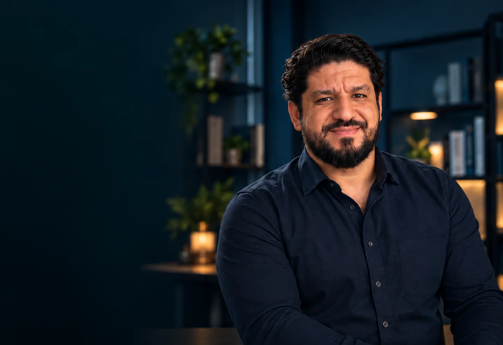
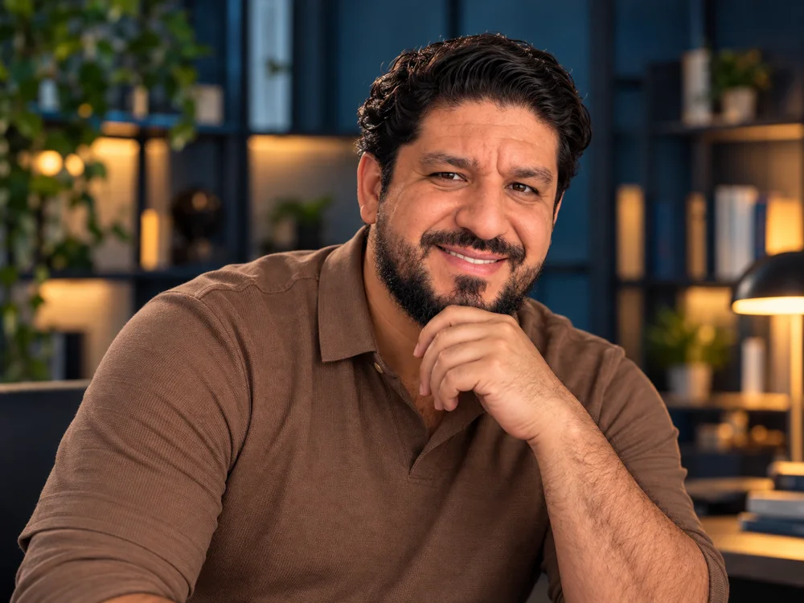

Conceitos e evolução histórica
Como os conceitos de morte evoluíram e os fundamentos da morte encefálica.

Dr. Anderson Gleryston CRMPB 14580
CURSO GRATUITO · ONLINE
Da suspeita aos critérios do diagnóstico: entenda o raciocínio por trás de cada etapa.
Quero participar gratuitamentePara internos de medicina e médicos recém-formados.
Conteúdo em atualização: novas aulas estão sendo adicionadas à plataforma.
Um caminho de estudo para aproximar a teoria das situações do plantão.
O QUE VOCÊ VAI APRENDER
Fundamentos, avaliação clínica, exames, documentação e comunicação com a família.
8 EIXOS DE APRENDIZADO
Como os conceitos de morte evoluíram e os fundamentos da morte encefálica.
Legislação, responsabilidades médicas e a distinção entre diagnóstico e doação de órgãos.
Lesão irreversível, observação, sedação, bloqueio neuromuscular e alterações fisiológicas.
Coma não perceptivo, reflexos de tronco, repetição dos exames e situações de exceção.
Preparação, métodos, alternativas na hipoxemia, interrupção e interpretação dos resultados.
Angiografia, Doppler transcraniano, cintilografia e EEG: indicações e limitações.
Termo de Declaração de Morte Encefálica, declaração de óbito, registros e notificações.
Acolhimento familiar, comunicação durante o processo e suporte após a determinação.
Para conectar os conteúdos às dúvidas e decisões do plantão.
Programa previsto · novas aulas adicionadas progressivamente.
Referências de estudo: apostila CDME da AMIB e Resolução CFM nº 2.173/2017.

QUEM VAI GUIAR SEU APRENDIZADO
CRMPB 14580
Médico e educador. Ensino voltado a transformar conhecimento em decisões seguras, conectando o estudo à realidade do plantão.
Conheça minha históriaCOMECE COM AS AULAS JÁ DISPONÍVEIS
Crie sua conta e acesse gratuitamente as aulas já disponíveis.
Quero participar gratuitamente